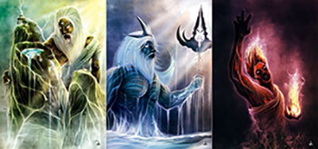

her parents are hades and persephone. Iris is the youngest of five children, and the only girl. She has four extremely protective older brothers, Haden, Danny, Liam, and Nick. She is the only one that inherited there fathers blue flame, which means she is the true ruler of hell. she goes to the camp for the gods childeren. her best friends are Max son of Zeus and Adrian son of Poseidon
"Baboom. Name is Iris Hades, lady of the dead, hi, howya doin'?"
"I'm sorry. You hear that sound? It's the sound of my freedom fluttering out the window forever."
"Hello, Father. You're looking...young."
Iris and her friends live at a camp for the gods childeren. this camp is where thye go to train to learn how to potentially take over for there parents.